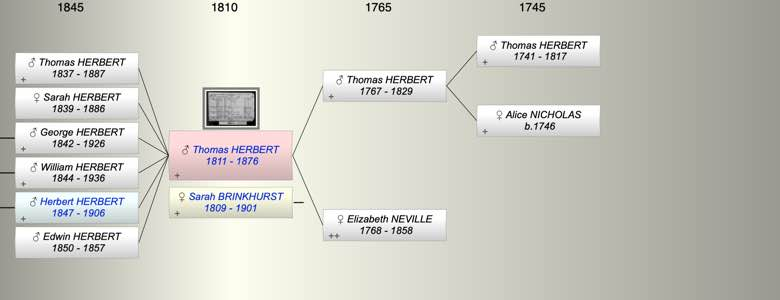
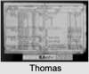

| [Index] |
| Thomas HERBERT (1811 - 1876) |
| scale maker |
|  |
|  |
| b. 1811 |
| m. Sarah BRINKHURST (1809 - 1901) |
| d. 11 May 1876 at 115 Caledonian Road aged 65 |
| Near Relatives of Thomas HERBERT (1811 - 1876) | ||||||
| Relationship | Person | Born | Birth Place | Died | Death Place | Age |
| Grandfather | Thomas HERBERT | 1741 | 1817 | 76 | ||
| Grandmother | Alice NICHOLAS | 1746 | Y | |||
| Father in Law | Benjamin BRINKHURST | |||||
| Mother in Law | Mary FINCH | |||||
| Father | Thomas HERBERT | 1767 | 1829 | London | 62 | |
| Mother | Elizabeth NEVILLE | 1768 | 1858 | 90 | ||
| Self | Thomas HERBERT | 1811 | 11 May 1876 | 115 Caledonian Road | 65 | |
| Wife | Sarah BRINKHURST | 1809 | 1901 | 92 | ||
| Son | Thomas Benjamin HERBERT | 17 Nov 1837 | 24 Oct 1887 | 49 | ||
| Daughter | Sarah Ann HERBERT | 1839 | 1886 | 47 | ||
| Son | George HERBERT | 1842 | St George In The East Stepney, London | 1926 | 84 | |
| Son | William A HERBERT | 1844 | 1936 | 92 | ||
| Son | Herbert HERBERT | 10 Jan 1847 | 39 Cannon Street, Parish Of St George, Mid | 17 Mar 1906 | 41 Gresham Road, Brixton | 59 |
| Son | Edwin HERBERT | 1850 | 1857 | 7 | ||
| Brother | George HERBERT | 1814 | 1870 | 56 | ||
| Daughter in Law | Mary Ann JAMES | 1849 | St Pancras | |||
| Daughter in Law | Mary Ann STEPHENS | 1840 | Newington | 1913 | 73 | |
| Daughter in Law | Mary OLDAKER | 1846 | 1922 | 76 | ||
| Daughter in Law | Charlotte BREWER | 26 Jul 1851 | Alphington | 1940 | Pinhoe | 89 |
| Granddaughter | Annie Georgina HERBERT | 1867 | 1884 | 17 | ||
| Grandson | Living or Recently Deceased | |||||
| Granddaughter | Mary Sophia HERBERT | 1873 | 1938 | 65 | ||
| Granddaughter | Living or Recently Deceased | |||||
| Granddaughter | Living or Recently Deceased | |||||
| Grandson | Living or Recently Deceased | |||||
| Grandson | Living or Recently Deceased | |||||
| Granddaughter | Winifred HERBERT | 1884 | 1885 | 1 | ||
| Granddaughter | Living or Recently Deceased | |||||
| Granddaughter | Living or Recently Deceased | |||||
| Grandson | Living or Recently Deceased | |||||
| Grandson | Living or Recently Deceased | |||||
| Granddaughter | Living or Recently Deceased | |||||
| Granddaughter | Living or Recently Deceased | |||||
| Grandson | Living or Recently Deceased | |||||
| Grandson | Aubrey Arthur HERBERT | 12 Sep 1886 | Upper Holloway | 1934 | Lambeth | 48 |
| Aunt | Margaret HERBERT | 1775 | 1851 | 76 | ||
| Uncle | John CLARKE | 1770 | ? | Y | ||
| Sister in Law | Susannah HALKER | 1799 | Y | |||
| Events in Thomas HERBERT (1811 - 1876)'s life | |||||
| Date | Age | Event | Place | Notes | Src |
| scale maker | |||||
| 1811 | Thomas HERBERT was born | Note 1 | |||
| 1829 | 18 | Death of father Thomas HERBERT (aged 62) | London | Note 2 | |
| 17 Nov 1837 | 26 | Birth of son Thomas Benjamin HERBERT | Note 3 | ||
| 1839 | 28 | Birth of daughter Sarah Ann HERBERT | |||
| 1842 | 31 | Birth of son George HERBERT | St George In The East Stepney, London | ||
| 1844 | 33 | Birth of son William A HERBERT | |||
| 10 Jan 1847 | 36 | Birth of son Herbert HERBERT | 39 Cannon Street, Parish Of St George, Mid | ||
| 1850 | 39 | Birth of son Edwin HERBERT | |||
| 1857 | 46 | Death of son Edwin HERBERT (aged 7) | |||
| 1858 | 47 | Death of mother Elizabeth NEVILLE (aged 90) | Note 4 | ||
| 11 May 1876 | 65 | Thomas HERBERT died | 115 Caledonian Road | ex Probate | |
| Personal Notes: |
|
Thomas Herbert is the first generation of the family to run the company setting up the business in 1842. He was the second son of Thomas Herbert, a tidewaiter or customs officer. He married Sarah Brinkhurst in 1836 and they had six children.
He started working for a scalemaker in London as he claimed on his early letterheads '17 years with Pallet's'. 1841 census living at 2 Catherine Street, St George, Tower Hamlets, Middlesex HO107 piece 697 folio 6/54 page. Thomas' mother in law and father in law were living with him and his family. In 1842 at the age of 31 he set up on his own account in Cannon Street, St George in the East at the home of his father-in-law Benjamin Brinkhurst, whose daughter Sarah he had married in 1836. 1851 census living St George in the East. He clearly prospered, and in 1857 bought the business of George Birch in Chichester Place, Kings Cross [later renamed Grays Inn Road], for 200 pounds. Then in December 1867 he signed an agreement to purchase the 100+ year old business of the Wood's trading at 6&7 West Smithfield. His timing was excellent, as the new Smithfield Meat Market opened in November 1868. His three sons all started in the business, but his eldest son, Thomas Benjamin Herbert, left in 1863 to fight in the American Civil War. Thomas retired in 1873, and his two other sons George and William continued in the firm, but dissolved their partnership only 9 days before their father's death in May 1876. |
| Created on a Mac™ using iFamily for Mac™ on 15 Sep 2023 |